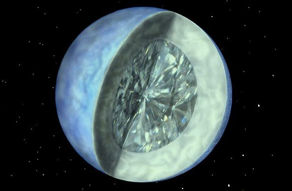
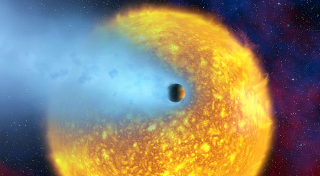
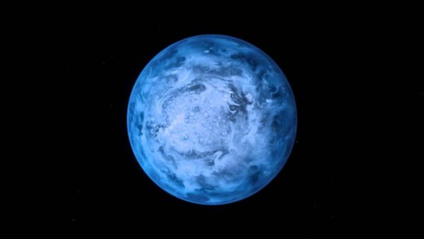
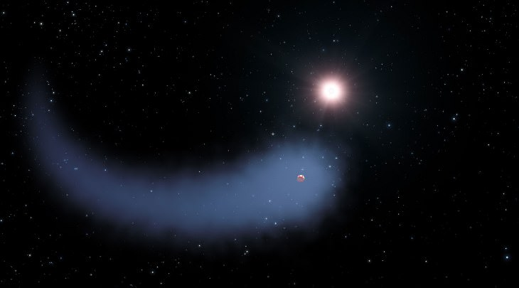

Planetas Mais Misteriósos do Universo
Prepare-se para uma jornada intergaláctica que transcende a imaginação,
enquanto desvendamos os mistérios de planetas que desafiam todas as expectativas conhecidas.
De atmosferas tóxicas a paisagens surreais, cada planeta que apresentamos é um testemunho da incrível
diversidade que existe além dos limites da nossa própria esfera celestial.

O Planeta Diamante - 55 Cancri-e
Ele é composto por uma superfície de grafite, uma camada grossa de 1/3 de sua massa sendo
puro diamante e orbita em uma estrela bem semelhante ao Sol na constelação de Câncer.
Ele já tinha sido descoberto em 2004, mas os cientistas só conseguiram confirmar essa composição tempos mais tarde.
.jpg)
O Planeta J1407-b e Seus Grandes Anéis Planetários
A descoberta dele foi bem recente, em meados de 2012. Os dados desse registro foram
compilados e só publicados recentemente. O J1407-b pode derrubar o título de um já
conhecido planeta. Ele é bem semelhante a Saturno por conta de seus sistema de anéis
planetários que são 200 vezes maiores que o tradicional planeta dos anéis.

Planeta Osiris - HD 209458-b
O HD 209458-b é o primeiro exoplaneta a ser descoberto em trânsito de sua estrela que orbita.
Localizado a 150 anos-luz em distância do planeta Terra, este planeta gasoso vive sob o calor
extremo e uma imensa pressão e evaporação de gases atmosféricos, como oxigênio, hidrogênio e carbono.

Planeta Matusalém - PSR 1620-26-b
Ele é considerado como o planeta mais antigo do universo e possui 3 vezes a idade da Terra.
A localização deste exoplaneta fica a aproximadamente 12.400 anos-luz de distância na
constelação do Escorpião e orbita a estrela binária PSR B1620-26.

O planeta mais infernal - 55 Cancri e
Esse estranho mundo tem um lado onde é eternamente
dia e outro eternamente noite. Seu lado diurno atinge cerca de 2400 graus Celsius,
e se você achava que o lado noturno seria menos infernal, se prepare para seus nada
"refrescantes" 1300 graus Celsius .
Essas temperaturas terríveis ocorrem, dentre vários motivos, devido a proximidade desse
exoplaneta com sua estrela: 0,0183 UAs ou cerca de 2.700.000 km.

Planeta Queimado de Gelo - Gliese 436 b
O Gliese 436 b é uma das contradições mais desconcertantes da astronomia.
Cientistas brincam com sua denominação e o chamam de "planeta queimado de gelo", pois tem uma temperatura
em média de 439 °C, mas é cercado por uma nuvem muito fria de hidrogênio que é 50 vezes maior que o seu tamanho.
Graças à reação que ocorre no planeta e nessa nuvem, é possível ver uma impressionante trilha dessa matéria em vapor ao redor e mais distante dele.